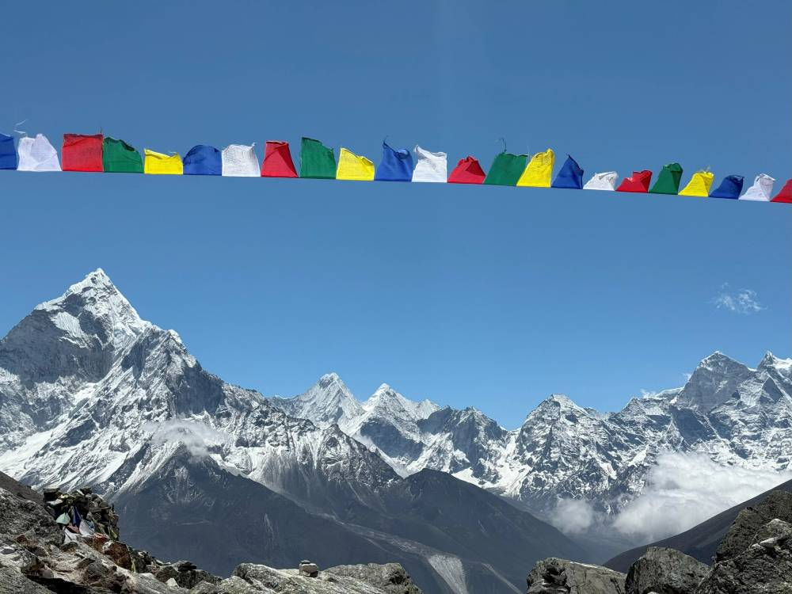
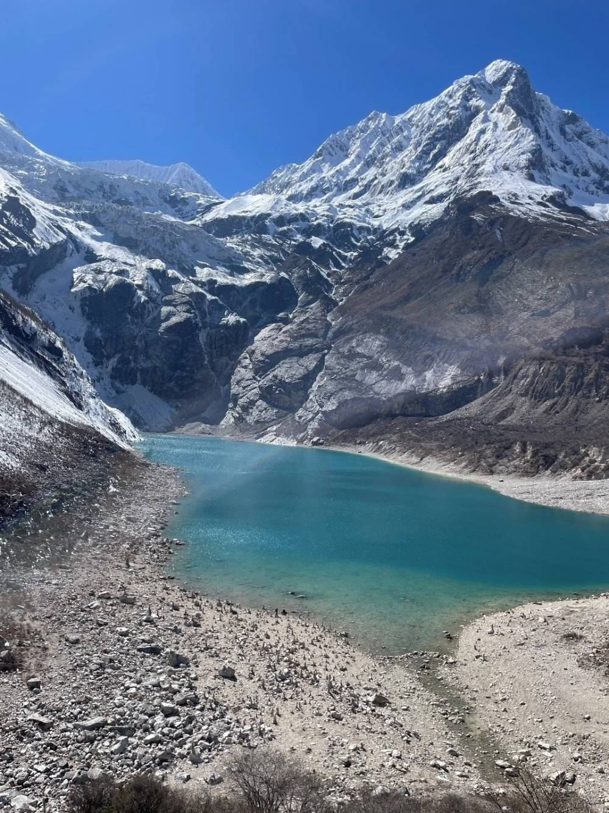
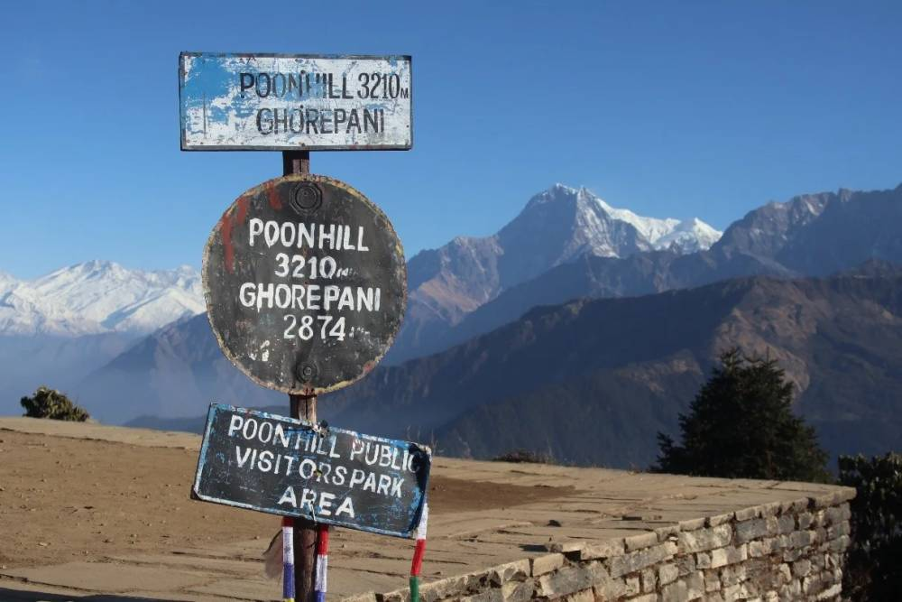
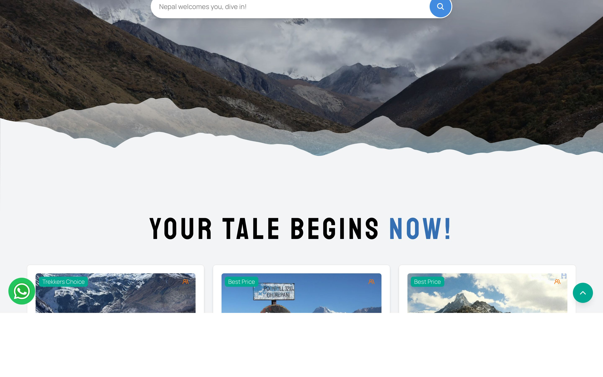
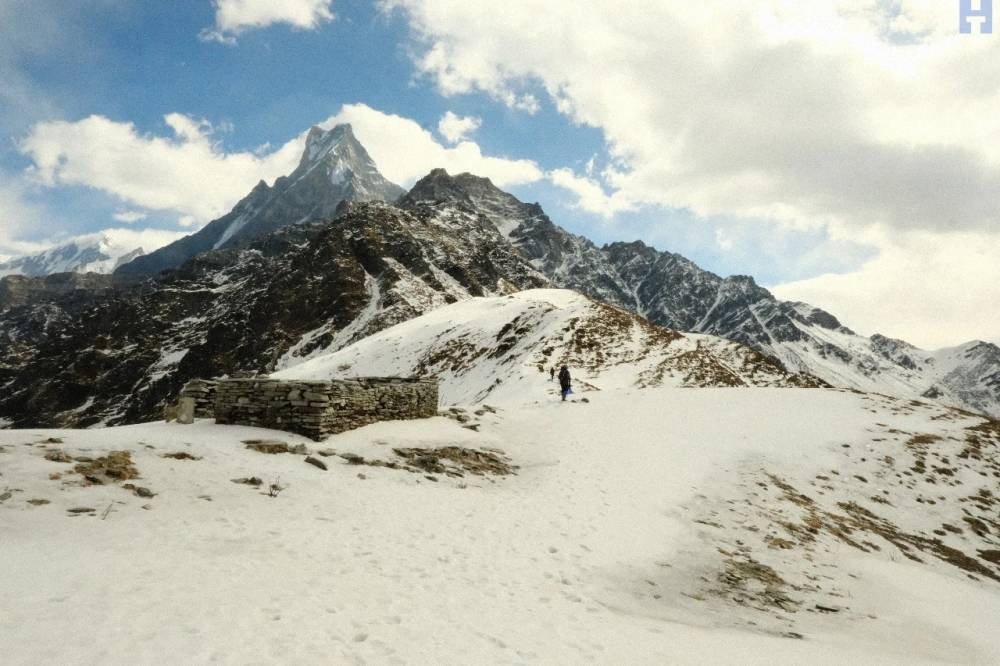
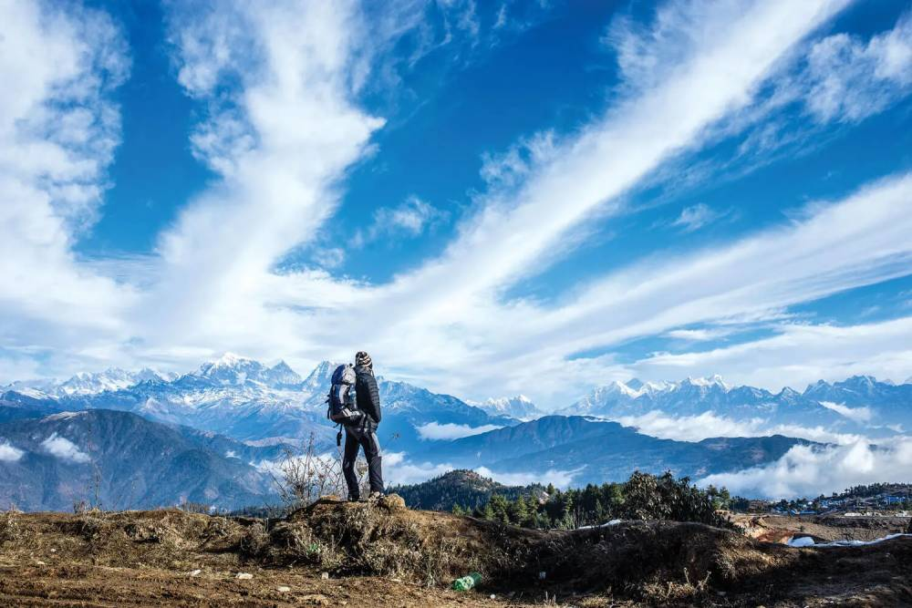

Hellotrekkers · Adventure Travel · Nepal
How Pixel Kriti helped Hellotrekkers discover that the real obstacle to growth wasn't a missing website, but a young company's credibility in a country where trekking rules are difficult even for veterans to follow.
Hellotrekkers is a one-year-old trekking company based in Kirtipur, Nepal, offering guided treks that range from world-famous routes like Everest Base Camp, Annapurna, and Manaslu to quieter regional trails. Its founder, Aashish, built the business on an unusual mandate: earn a moderate personal income and direct the rest of the profit toward the social impact and non-profit work he supports separately.
When Aashish approached Pixel Kriti on a friend's recommendation, the request seemed simple enough. He needed a brand identity and a website. But a closer look revealed a different problem entirely. Nepal's trekking permits, guide requirements, and safety rules vary by region and change often. A young company asking travelers to trust it with a multi-day trek through remote, high-altitude terrain needed to prove it understood those specifics for every route it offered, not just look presentable online.
Rather than build compliance infrastructure the company had no way of maintaining, Pixel Kriti drew on established third-party sources for regulatory content, used Cloudinary to manage a growing library of trek photography, and tested every supporting tool through a free trial before spending any budget on it. The project was carried by Pixel Kriti's core team: Amitesh on analytics and management, Bishal on website design and development, and Muzammil on marketing, sales, and analytics.
Over five months, spanning brand strategy through front-end and back-end development, Hellotrekkers went from having no public presence at all to a website built to cover treks across the country. Aashish used it to land his first clients, and the company has since completed 15 treks across Nepal.
Nepal's guided trekking industry sits at an unusual intersection. It sells adventure, but its entire value proposition rests on trust. A trekker paying a company to guide them through remote, high-altitude terrain is betting on that company's judgment about safety, permits, weather, and logistics, often based on little more than a website and a referral.
The market is crowded. Operators built up over decades compete alongside dozens of small, founder-led agencies, all chasing the same travelers with similar promises of guided, personalized experiences. Standing out takes more than good photography or adrenaline-fueled copy. It takes proof that you know what you're doing when conditions turn dangerous and the rules shift without warning.
Hellotrekkers entered this market about a year before this engagement began. Operating out of Kirtipur in the Kathmandu Valley, the company offered treks spanning both flagship routes, Everest Base Camp, Annapurna, Manaslu, and lesser-known trails like Ama Yangri. Aashish ran the business with most client-facing work still resting on his own shoulders, which is typical at this stage of a company's life.
But Aashish had set a clear goal for what the business was actually for: a moderate personal income, with the rest of the profit going toward the social impact and non-profit work he was involved in separately. That framing mattered later, because it shaped what success was supposed to look like. Not maximum extraction, but sustainable growth aligned with a purpose.
By the time Hellotrekkers reached out to Pixel Kriti, the company had moved past its earliest, most exploratory days and into a real growth stage. It had a widening slate of treks and enough word-of-mouth interest to justify a proper professional presence, just not one it had built yet.


Aashish came to Amitesh at Pixel Kriti on a friend's recommendation. The conversation was straightforward at first. Hellotrekkers needed a brand identity and a website. The company had a name, a growing list of treks, and a founder confident in the experience he could offer travelers. What it lacked was anywhere to send people online.
Framed that way, it read like the request almost every early-stage company eventually makes: build a professional-looking home base. Nothing at this stage suggested the problem ran any deeper.
Amitesh had seen this pattern before, though. In travel and safety, a request for a website is often standing in for a deeper credibility problem. Pixel Kriti agreed to take the project on, but only on the condition that the team would understand how Hellotrekkers actually operated before any design or development work began.
Before any design work started, Pixel Kriti's team spent real time learning how Hellotrekkers actually ran. Amitesh led analytics and management, Bishal handled website and design, and Muzammil covered marketing, sales, and analytics.
The company's treks spanned the length of the country, each with its own terrain, season, and, as later conversations would reveal, its own mix of permits and safety requirements. Aashish was the company's only real point of contact for clients, coordinating logistics himself and personally meeting groups before they set out.
There was no website yet. No established library of trek content. No dedicated compliance or content function either. Every piece of practical information about every trek would have to be sourced, organized, and kept current by a very small team, which in practice meant Aashish, with occasional help.
The goal Aashish described was growth: more visibility, more inbound interest, enough revenue to sustain the company and his broader social commitments, without needing to operate like a large, heavily capitalized travel agency.
A few things were true about Hellotrekkers at this stage. There was no functioning website, so interested travelers had nowhere consistent to go beyond word of mouth or direct messages. Trek-specific details existed only informally, communicated case by case rather than published anywhere. There was no consistent brand identity across the different treks. And there was no shared content structure, so every new trek or region meant explaining the same categories of information from scratch, again.
Together, these pointed to something deeper than a missing website. This was a business succeeding despite having no digital presence, one that would struggle to scale without a systematic way of presenting its own expertise.
Early conversations with Aashish covered familiar branding territory: tone, feel, what the company should look like to a prospective trekker. But as Pixel Kriti's team asked more about how each individual trek actually worked in practice, a pattern started to surface.
Every trek carried its own combination of requirements. Some regions needed conservation area permits. Others needed restricted-area permits. Licensed guide requirements had been tightening across the country for years. Some of this knowledge lived only in Aashish's own experience. Some existed in fragments other operators had informally shared. Some hadn't even been settled yet for treks the company planned to add down the line.
What had looked, in the first conversation, like "we need a website" started to look like something else entirely: a need to present a wide and growing product catalog, one governed by rules that were themselves still shifting, consistently enough that a first-time visitor could actually trust it.
This wasn't a minor inconvenience. Nepal's trekking-permit system had gone through a real overhaul in recent years. Mandatory licensed guides in protected areas, a mix of conservation-area and restricted-area permits that differ by region, and rules significant and inconsistently enforced enough that even experienced operators openly describe keeping up with them as a genuine challenge.
Treated only as a symptom, the missing website could have been solved quickly and cheaply. A templated site, some stock photography, generic trekking copy. Plenty of small tourism operators settle for exactly that.
But that would have solved the wrong problem.
A one-year-old company asking travelers to trust it with a multi-day trek into remote terrain, governed by rules that confuse even seasoned trekkers, needed its website to show, trek by trek, that the company understood the specific safety and regulatory realities of each route well enough to be trusted with them.
A generic brochure site would have looked identical to dozens of competitors and said nothing about whether Hellotrekkers understood the practical difference between a standard route and a restricted-area trek. Building an attractive front end without first solving how that route-specific information would be sourced, kept current, and presented consistently would have left the real problem untouched, and made it worse the moment the company tried to expand beyond the handful of treks Aashish already knew by heart.
Three broad approaches were realistic.
Proprietary infrastructure. The first was to build proprietary infrastructure for tracking trek-by-trek permit and safety information, a system the company would own outright. This offered the most long-term control, but it demanded ongoing maintenance a small, early-stage team wasn't positioned to sustain, especially with Nepal's own rules still shifting by region and season. For a company this size, it risked becoming a second, permanent project sitting on top of the actual business.
Move fast. The second was to launch a simple, templated brochure site right away and treat detailed trek content as a problem for later. This was the cheapest and quickest path, and it would have satisfied the original request on paper. But it left the credibility gap exactly where it started, and risked customer confusion, or worse, safety-related misunderstandings, as the trek catalog grew beyond the routes Aashish already knew intimately.
The middle path. The direction Pixel Kriti chose sat between these two. Build a website structured to present route-specific information consistently, but source the regulatory and safety content itself from established third parties rather than build it in-house, and validate every supporting tool through a free trial before committing any of the company's limited budget. It cost more effort upfront than a template site, but far less than proprietary infrastructure, and unlike the fast option, it actually addressed the problem the investigation had surfaced.
The brand identity work, led by Bishal, leaned away from the thrill-and-adrenaline tone common in adventure travel marketing, toward something calmer and more grounded. This was a deliberate choice, matching a founder who had explicitly said the business wasn't built to maximize profit.
A brand built on hype would have sat awkwardly next to that intent, and likely worked against the trust the company actually needed to build. Instead, Pixel Kriti created a visual identity built around competence, through clean, professional design that suggested real attention to detail; authenticity, by avoiding the overused tropes of extreme adventure marketing; and trustworthiness, through a tone that read as informative rather than salesy.
The color palette, typography, and imagery choices all reinforced the same message: this is a company that knows what it's doing and cares about getting it right.

The website itself, designed and developed by Bishal, was structured so that every trek, whether a well-known route or a quiet regional trail, could carry the same consistent block of practical and safety information, rather than reading like a one-off page written in isolation.
That structure is what let the site expand to cover treks across Nepal without every new addition requiring its story to be reinvented. Every route presents the same information categories: permits required, guide requirements, difficulty level, best seasons, safety considerations, and practical logistics. The information hierarchy was kept clear enough that users could find what they needed without digging through paragraphs of marketing copy, and photography, icons, and layout elements repeat across pages to build familiarity and trust.
Sourcing permit and safety content through established third parties, rather than building a proprietary database, meant the information could stay current without demanding a maintenance team the company didn't have.
The technology choices reflected the same principle applied throughout the project: build for the business's current scale, not its imagined future scale.
Cloudinary handled image management. Given how visual a trekking product is, and how quickly a photo library needed to grow across dozens of routes and regions, this was a deliberate choice over custom-built infrastructure. It let the site handle a large and expanding volume of trek photography without a proportional increase in technical overhead.
A custom CMS handled trek management. Pixel Kriti built this specifically for trek package management, so the Hellotrekkers team could add new treks without developer help, update itineraries and pricing in real time, publish safety and permit information consistently, and manage a growing catalog without technical support. WordPress would have been quicker to launch, but a custom system gave Hellotrekkers the exact structure it needed for trek-by-trek safety and permit information, without the bloat, plugin maintenance, or security overhead that comes with generalized platforms.
Laravel powered the back end. This PHP framework is widely used in Nepal's travel industry, and it gave the project robust security for protecting client and business data, scalability as the company adds more treks and features, efficient database management for a multi-route catalog, and access to a strong local developer community for ongoing support.
A lightweight, responsive framework powered the front end, built mobile-first since roughly 70 percent of travel searches happen on a phone. That meant fast loading times on slower connections, easy navigation on small screens, and a consistent experience across phone, tablet, and desktop.
The site was deployed on shared hosting with CDN integration, which kept page-load times fast for international visitors, supported the growing library of trek photography, and minimized hosting costs while maintaining performance.
Muzammil implemented Google Analytics and Google Search Console to track visitor behavior, referral sources, search performance, and which treks attracted the most interest, along with conversion paths from visitor to inquiry. Schema markup was added for trekking packages to improve visibility for route-specific searches like "Everest Base Camp trek" or "Annapurna Circuit guided tour," giving Hellotrekkers a technical SEO foundation that helps it show up in relevant searches without ongoing paid advertising.
The engagement ran roughly five months, in a clear sequence.
Months one and two covered brand strategy and discovery, led by Amitesh and Bishal. The team ran a competitive analysis of other trekking operators, developed brand positioning and messaging, created the visual identity, logo, color palette, typography, and refined the brand story that would carry across every touchpoint.
Months two through four covered website development. The team built wireframes and visual designs for every page template, developed responsive, mobile-first front-end interfaces, built the Laravel-based CMS for trek management, designed the consistent content structure for trek information, and architected the database to handle a growing catalog.
Months four and five covered content population and testing. The team populated trek pages with practical and safety information drawn from third-party sources, integrated and organized photography through Cloudinary, tested the site across devices and browsers, and validated supporting tools through free trials before any budget was spent on them.
In the final stretch, Muzammil worked directly alongside Aashish as he began using the new site to reach his first clients, applying his background in marketing, sales, and analytics. Pixel Kriti supported the final deployment, trained Aashish on managing content through the custom CMS, advised on how to promote the new site, and made sure proper analytics tracking was in place from day one.
A few adjustments came up along the way. Pixel Kriti refined its approach to content sourcing as it identified the most reliable third-party sources for permit information. Cloudinary settings were adjusted after testing with the growing photo library, to balance quality against load speed. The custom CMS was refined based on Aashish's own feedback during content population, adding features that made day-to-day content management more intuitive. And additional testing on low-bandwidth connections led to further mobile optimizations.
Hellotrekkers went from having no public presence at all to a functioning website that Aashish could point prospective clients to directly, and the results were tangible almost immediately.
Before the website, there was nowhere to send interested travelers, trek details were communicated informally and often inconsistently, there was no visual identity to build recognition around, and every new trek meant reinventing the explanation from scratch.
After the website, practical and safety information is treated consistently across a catalog spanning both flagship and lesser-known routes. The structure scales, giving the company a way to add new treks without rebuilding its story from zero each time. The professional presence establishes credibility with first-time visitors, and there are clear paths for travelers to inquire and book.
Using the site, and with Muzammil's guidance on client outreach, Aashish began reaching out to and securing the company's first clients. Since launch, Hellotrekkers has completed 15 treks across the country, built a growing client base through the site's credibility, grown sustainably in a way that matches Aashish's original goals rather than chasing maximum extraction, and kept the profits flowing consistently to the non-profit work he supports.


One of the more important decisions on this project was what Pixel Kriti chose to leave out. That discipline is what kept the project focused on what Hellotrekkers genuinely needed at its current stage.
A proprietary permit-and-compliance database was considered and set aside. Maintaining it would have demanded more ongoing effort than a small, early-stage team could realistically sustain, especially with Nepal's own trekking rules still shifting by region and season. Relying on established third parties met the same need without that overhead.
A more elaborate booking or payment system was also left for later. With Hellotrekkers still building its first real customer base, a complex transactional layer would have solved for a scale the company hadn't reached yet. Simple, direct paths for a traveler to inquire or book were enough for where the business actually stood.
And Pixel Kriti avoided overengineering more broadly. Cloudinary replaced custom image infrastructure. Third-party sources replaced a proprietary content database. Every tool was tested through a free trial before any budget went toward it. Shared hosting with a CDN replaced dedicated infrastructure. None of these were compromises. Each one reflected the same principle applied consistently: build only as much as the business, at its current stage, genuinely needed.
| Service | Lead |
|---|---|
| Brand identity and strategy | Amitesh and Bishal |
| Website design | Bishal |
| Website development, front-end and back-end | Bishal |
| Content structuring for trek-specific information | Amitesh |
| Marketing, sales, and client outreach support | Muzammil |
| Analytics and AI/ML insights | Amitesh and Muzammil |
| SEO and search visibility | Muzammil |
| Client training and handover | Entire team |
| Technology | Purpose | Why it was chosen |
|---|---|---|
| Cloudinary | Image and media management | Handles a growing photo library without a proportional rise in technical overhead |
| Custom CMS | Trek package management | Gave the exact structure needed for consistent safety and permit information, without generic platform bloat |
| Laravel | Back-end development | Robust security, scalability, efficient database management, and a strong local developer community |
| Responsive front-end framework | Mobile-first design | Roughly 70 percent of travel searches happen on mobile, making this essential for accessibility |
| Shared hosting with CDN | Deployment and performance | Fast load times for international visitors while keeping hosting costs manageable |
| Google Analytics | Visitor tracking and behavior | Understanding which treks attract interest and measuring marketing effectiveness |
| Google Search Console | Search performance monitoring | Tracking keyword rankings and technical SEO issues |
| Schema markup | Search visibility | Improves visibility for route-specific queries like "Everest Base Camp trek" |
Especially in categories like travel and safety, where trust is the actual product, the website is just the visible tip of the iceberg. The real work is building the operational clarity that makes the website credible in the first place.
The amount a business has to get right multiplies with every new product line it adds. Planning for that structure before scaling prevents painful retrofitting later, and Hellotrekkers' structured content approach saved countless hours as it expanded from a handful of treks to nationwide coverage.
Following category convention in branding often reads as inauthentic. Matching tone to a founder's actual motivations tends to read as more credible to customers, and Aashish's social impact mission came through in the brand's grounded, trustworthy tone rather than the usual adventure hype.
For early-stage, resource-constrained businesses, this keeps the build lean without sacrificing quality, and it prevented unnecessary spending on tools Hellotrekkers didn't yet need.
Building custom systems a small team can't maintain long-term rarely holds up. Relying on established third parties for specialized information or infrastructure often delivers better results with less overhead.
The structure built in month one needs to be able to absorb the growth that shows up by month twelve, and building for scalability from the start paid off as Hellotrekkers added treks and clients.
Building ahead of demand tends to protect neither budget nor quality. Building for the business's current scale kept the project focused, affordable, and effective.
What began as a request for a brand and a website turned into a lesson in how much a young company's credibility depends on operational clarity rather than visual polish.
For a business built around physical safety in remote terrain, and for a founder whose explicit ambition wasn't to maximize revenue, "look professional" was never really the goal. "Be legibly trustworthy, one trek at a time" was closer to it.
Nepal's own trekking regulations, difficult even for experienced travelers to keep straight, meant that treating content as an afterthought would have undercut the very trust the brand was trying to build. Pixel Kriti's approach, structure first, visual polish second, turned a potential liability into Hellotrekkers' strongest asset.
Today, Hellotrekkers has a website that doesn't just look good. It communicates competence, builds trust, and scales without friction. Most importantly, it helps travelers make informed decisions about their safety in some of the most remote terrain on Earth.
Pixel Kriti is a technology and consultancy agency that helps businesses solve their core operational challenges through thoughtful technology and design. We work with early-stage companies across Nepal, India, and Pakistan to build sustainable digital infrastructure that grows with them.
We don't just build websites. We solve business problems.
Our team brings together expertise in business analytics and AI/ML, website design and development, and marketing, sales, and digital strategy.
About the authors: Amitesh leads analytics and management, focusing on understanding business problems and designing data-driven solutions. Bishal leads website and design, taking creative and technical work from brand identity through full-stack development. Muzammil leads marketing, sales, and analytics, specializing in go-to-market strategy, SEO, and performance tracking.
Ready to solve the real problems holding your business back? Let's talk: info@pixelkriti.com · pixelkriti.com